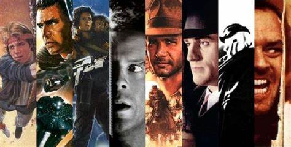

Welcome to the Movie Icons Website

Discover the most iconic movies from the 80s and 90s.
The Golden Era of Blockbusters: Exploring 80s and 90s Cinematic Gems
This article delves into the era of blockbuster filmmaking,
highlighting iconic movies that defined the 80s and 90s.
From action-packed adventures like "Indiana Jones" and "Die Hard" to beloved coming-of-age
tales like "The Breakfast Club" and "Ferris Bueller's Day Off," explore the cultural
significance and lasting impact of these films.
Nostalgia Revisited: Revisiting 80s and 90s Pop Culture Phenomena
Dive into the nostalgia of the 80s and 90s by examining the pop
culture phenomena that shaped those decades. From the rise of MTV and the birth
of iconic video games to the fashion trends and music that defined a generation,
this article celebrates the enduring influence of these cultural touchstones.
Cinematic Legends: The Directors and Stars Who Defined the 80s and 90s
Highlight the visionary directors and charismatic stars who left an
indelible mark on 80s and 90s cinema. From Steven Spielberg's mastery of storytelling to the
magnetic presence of actors like Tom Hanks, Julia Roberts, and Will Smith, explore the talent
behind
the memorable films that continue to captivate audiences today.